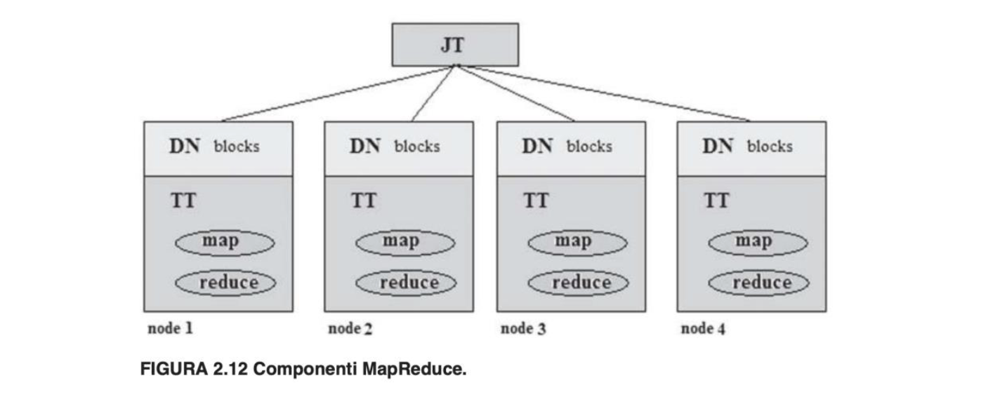
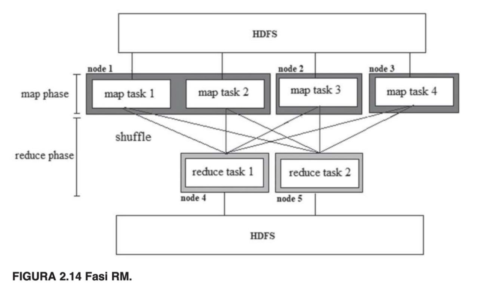
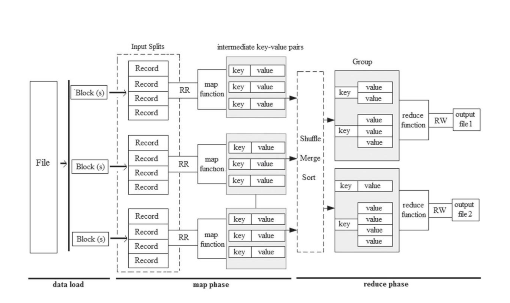
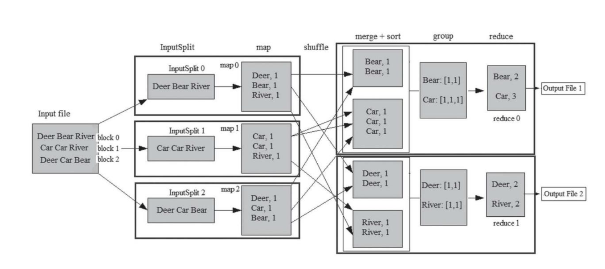
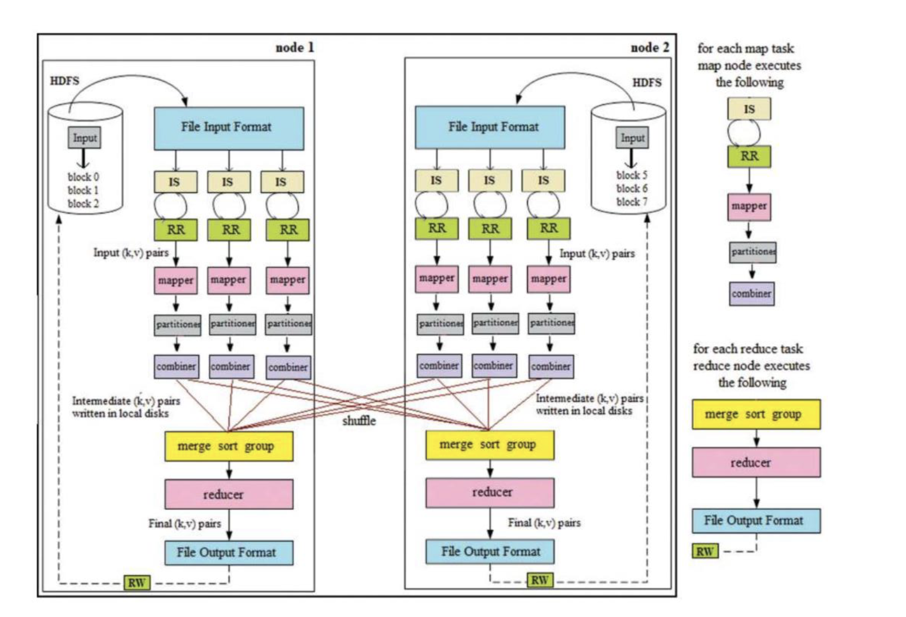
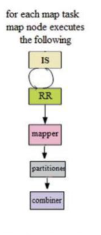
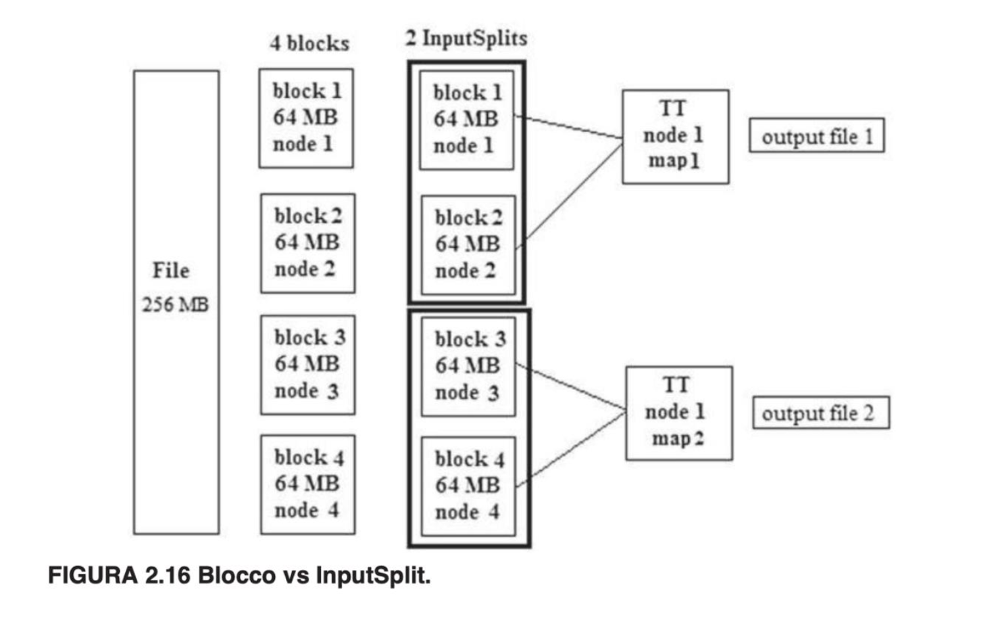
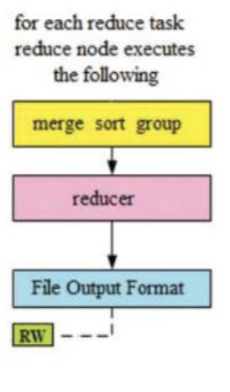

MR è uno strumento di elaborazione batch in parallelo dei dati altamente distribuito, scalabile orizzontalmente, con tolleranza agli errori nel framework Hadoop che viene eseguito su un cluster di server di base inaffidabili per elaborare Big Data. ==I dati vengono raccolti e archiviati su HDFS prima di avviare i lavori MR==. E’ facile sviluppare algoritmi scalabili utilizzando la MR senza ulteriori sforzi per gestire un sistema distribuito: Un programma sviluppato per un nodo può essere utilizzato per migliaia di nodi senza modificare nuovamente il codice. MR stesso parallelizza l’esecuzione, quindi gli utenti non devono investire sforzi per l’esecuzione parallela. La programmazione MR si basa su LISP (LISt Programming), un tipo di paradigma di programmazione funzionale (come Haskell, Scala, Clojure, Smalltalk, Ruby). Tutto nella programmazione funzionale ruota attorno alla funzione. Una funzione può essere passata/ ricevuta come argomenti, distribuita tra i nodi. La programmazione funzionale non mantiene lo stato e non supporta il blocco e la sincronizzazione. Quindi, è scalabile. Le attività MR vengono eseguite in modo indipendente, quindi è facile gestire i guasti parziali. Per sperimentare la vera potenza della MR, si dovrebbe lavorare con set di dati in TB, perché è qui che RDBMS impiega ore e fallisce, mentre Hadoop fa lo stesso in pochi minuti. MR ha due sottocomponenti (vedi Figura 2.12): JT e TT. Un tipico lavoro MR esegue due attività: mappare e ridurre

FASI MAP REDUCE
In generale, ci sono due fasi per l’esecuzione di un lavoro MR, come mostrato nella Figura 2.14: fase di mappatura e fase di riduzione. • La Fase MAP esegue una serie di attività di mappa (mapper) per leggere i dati dai dischi come coppie chiave-valore e produrre un numero arbitrario di coppie chiave-valore intermedie in base alla funzione di mappa definita dall’utente. • La fase di riduzione Fase Reduce esegue una serie di attività di riduzione (riduttori), che raccolgono l’output da tutte le attività della mappa, uniscono, ordinano in base alla chiave, aggruppano elenchi di valori che appartengono alla stessa chiave e producono l’output finale in base alla riduzione definita dall’utente funzione.
 


Fase MAP
il client HDFS divide fisicamente il file di input inviato in blocchi di uguali dimensioni e lo archivia in DN diversi in base alla consapevolezza del rack(RACK AWARENESS). I blocchi di dati richiesti vengono portati in memoria per alimentare l’attività della mappa per l’esecuzione per iniziare la fase della mappa. La fase della mappa inizia da FileInputFormat e termina quando tutte le attività della mappa sono state completate. Il nodo della mappa per un’attività della mappa esegue la seguente sequenza di funzioni da eseguire insieme alla funzione della mappa: Divisione input ⇒Lettore di record ⇒ Mapper ⇒ Partizionatore ⇒ Combinator

Input Split (IS)
Un IS rappresenta un insieme di blocchi che devono essere elaborati da una singola attività della mappa. Block è il concetto HDFS mentre IS è il concetto MR. IS è il raggruppamento logico di uno o più blocchi fisici. IS farà riferimento ad almeno un blocco. Per impostazione predefinita, la dimensione IS è uguale alla dimensione del blocco predefinita (64 MB). Come mostrato in figura 2.16, il file di input da 256 MB è diviso in quattro blocchi fisici da 64 MB e archiviati in DN diversi. Se la dimensione dell’IS è 128 MB, ogni IS raggruppa logicamente due blocchi fisici. Ogni IS viene elaborato da un’attività di mappa. Tieni presente che IS non contiene una copia dei blocchi fisici. Contiene solo la posizione dei blocchi fisici e i relativi metadati.

Chiave-Valore
Nell’ambiente di programmazione MR, ad ogni dato è associata una chiave. Una coppia chiave-valore è chiamata record. IS e i record sono entità logiche utilizzate al momento dell’esecuzione del lavoro. Non influenzano i blocchi fisici. Ogni passaggio nella sequenza di esecuzione MR accetta una coppia chiave-valore come input e restituisce coppie chiave-valore
Mappatura
attività di mappatura Il mapping è una funzione di mappa definita dall’utente, utilizzata principalmente per la pre-elaborazione dei record. Pertanto, l’output dell’attività di mappatura viene chiamato come coppie chiave-valore intermedie, ma non il risultato del lavoro MR. RR alimenta un record per mappare la funzione. Quando una funzione riceve input e produce output, viene chiamata task. Le attività di mappatura e riduzione vengono richiamate solo una volta al momento del lancio. Tuttavia, le funzioni map e reduce vengono richiamate per ogni record di input. Ogni attività della mappa ha il suo RR, come mostrato nello FASE MAPPA. Se sono presenti “n” record di input in IS, viene richiamata la funzione di mappa “n” volte e produce zero o più record di output. La funzione mappa consente agli utenti di scrivere la propria logica per decidere cosa fare con i record. È possibile analizzare il valore ed estrarre solo i campi rilevanti (proiezione) o filtrare i record indesiderati/errati o trasformare i record in entrata. L’output dell’attività della mappa viene archiviato in un buffer in memoria, come mostrato nella Figura 2.23. La fase della mappa termina solo dopo che tutte le attività di mappa di un lavoro sono state completate. La latenza di ciascuna attività della mappa può variare a causa di altre attività simultanee nel sistema
Partizionamento (bilanciamento e riduzione dell’input dell’attività)
Se viene avviata più di un’attività di riduzione, il partizionatore decide a quale attività di riduzione deve essere indirizzato un record di output della mappa. Il partizionatore è una funzione che bilancia la riduzione delle dimensioni dell’input delle attività da tutte le attività della mappa. Il partizionatore ha senso solo quando lanciamo più di un’attività di riduzione. Il partizionatore suddivide l’output di un’attività di mappa in più partizioni. Una partizione è una porzione dell’output della mappa che va a un particolare riduttore. Il numero di partizioni è uguale al numero di attività di riduzione. L’obiettivo del partizionamento è portare la stessa chiave da diverse attività della mappa un unico riduttore.
Example
Ad esempio, considera 10 attività sulla mappa per un lavoro di conteggio delle parole. Considera che le attività della mappa 1, 4, 6 e 10 producono la parola “Hadoop” come output. Per trovare il conteggio totale della parola “Hadoop”, è necessario ridurre un’attività. Pertanto, la parola “Hadoop” può essere contata come 4. Il partizionatore predefinito è HashPartitioner, che calcola il valore hash per decidere a quale riduttore deve essere inviato il record corrente. Funziona bene con qualsiasi numero di partizioni e garantisce che ciascuna partizione abbia il giusto mix di chiavi, portando a partizioni di dimensioni più uniformi.
Combinatore (ottimizzazione IO di rete e disco)
L’attività di combinazione riduce al minimo il traffico di rete, il trasferimento di I/O su disco e il numero di record elaborati dall’attività di riduzione. la funzione combinatore viene utilizzata per ridurre al minimo la dimensione dell’output della mappa localmente dopo la preparazione delle partizioni.
Nel contesto di MapReduce, il Combiner è un componente opzionale ma molto utile che agisce come un “mini-reducer” locale. Il suo scopo principale è quello di ridurre la quantità di dati intermedi generati dalle funzioni Map prima che vengano inviati alla fase di Shuffle e Sort e, successivamente, ai Reducer.
Ecco cosa fa e perché è importante:
- Agisce dopo il Mapper e prima dello Shuffle/Sort: Dopo che un Mapper ha elaborato il suo blocco di dati e ha emesso coppie
<chiave, valore>intermedie, il Combiner interviene su queste coppie localmente, sullo stesso nodo del Mapper. - Riduzione locale dei dati: Il Combiner esegue un’aggregazione o una riduzione parziale delle coppie
<chiave, valore>che hanno la stessa chiave sul nodo locale. Questo significa che, invece di inviare tutte le singole coppie al Reducer, il Combiner riassume i dati, diminuendone il volume. - Miglioramento delle prestazioni: Il vantaggio più significativo del Combiner è la riduzione del traffico di rete. Inviando meno dati attraverso la rete tra i Mapper e i Reducer, si alleggerisce la congestione e si velocizzano notevolmente i tempi di esecuzione complessivi del job MapReduce.
- “Mini-Reducer”: Spesso, la logica del Combiner è identica o molto simile a quella del Reducer. Questo perché il Combiner deve eseguire un’operazione che sia associativa e commutativa, in modo che l’ordine in cui i dati vengono combinati localmente non alteri il risultato finale prodotto dal Reducer. Se un’operazione non è associativa e commutativa (ad esempio, calcolare la media), usare un Combiner con la stessa logica del Reducer potrebbe portare a risultati errati.
Example
Esempio pratico (Conteggio parole): Mapper: “ciao mondo ciao” → <“ciao”, 1>, <“mondo”, 1>, <“ciao”, 1> Combiner (sul nodo del Mapper): Riceve <“ciao”, 1>, <“mondo”, 1>, <“ciao”, 1> e le aggrega localmente in <“ciao”, 2>, <“mondo”, 1>. Senza Combiner: Tutte le coppie originali sarebbero inviate ai Reducer. Vantaggio: Il Reducer finale riceverà meno dati da elaborare, poiché gran parte dell’aggregazione è già stata fatta a livello locale.
Fase Reduce
La funzione di riduzione in ciascuna attività di riduzione viene eseguita solo dopo che tutte le attività della mappa sono state completate. In generale, ridurre l’output degli spostamenti di fase (partizioni) di mapper/combinatore dai nodi della mappa per ridurre i nodi, **unisce tutte le partizioni, ordina in base alla chiave e raggruppa tutti i valori che appartengono alla stessa chiave per eliminare la ridondanza della chiave

Shuffle (fase di copia)
Shuffle è il processo mediante il quale l’output partizionato del mapper(Mappatura)/combinercombiner viene trasferito sulla rete HTTP a uno o più TT dove verranno ridotte le attività essere eseguito. Questa è anche chiamata fase di copia. Ciascun nodo di riduzione riceve una o più partizioni da tutte le attività della mappa. Se si decide di eseguire l’attività di riduzione nello stesso nodo in cui viene completata l’attività di mappa, lo shuffle non ha alcun ruolo. Ma come fa un nodo di riduzione a sapere quale nodo della mappa interrogare per le partizioni? Questo viene fatto con l’aiuto di JT. Al completamento di ogni attività della mappa, notifica al JT le partizioni. Ogni riduttore interroga periodicamente JT per conoscere il nodo che esegue le attività della mappa. Considera un file di input da 2 TB. Cosa succede se la dimensione dell’output del mapper è la stessa dell’input? Lo spostamento di 2 TB per ridurre i nodi sulla rete richiede un’enorme larghezza di banda. Questo è il motivo per cui il combinatore combiner viene eseguito per ridurre al minimo la dimensione dell’output della mappa da spostare attraverso una rete per raggiungere il nodo ridotto. Per ridurre ulteriormente le dimensioni dell’output della mappa, è possibile comprimerla. Snappy è il compressore più comunemente utilizzato in MR.
Unisci e Ordina (merge sort)
Le rispettive partizioni di output della mappa vengono copiate nell’attività di riduzione Java Virtual Machine (JVM). Non appena arrivano le partizioni da tutte le attività della mappa per ridurre i nodi, le partizioni dovrebbero essere unite in un unico file per l’ulteriore elaborazione. Ogni 10 file distribuiti vengono uniti per impostazione predefinita. Il file unito deve essere ordinato in base alla chiave.
Gruppo (Group)
Un insieme di valori che appartengono alla stessa chiave viene raggruppato per eliminare la ridondanza delle chiavi. Il numero di volte in cui viene eseguita la funzione di riduzione è uguale al numero di coppie chiave:elenco(valori) dopo il raggruppamento. Se esistono chiavi duplicate, la funzione di riduzione viene ripetutamente richiamata per ogni chiave duplicata. Se la stessa chiave è presente in più file distribuiti, per una singola chiave è necessario inserire molti file memoria (richiede più passaggi) per alimentare la funzione di riduzione. Ciò comporta molto IO. Questo è il motivo per cui ordiniamo e raggruppiamo i record prima di chiamare la funzione di riduzione. Pertanto, è richiesto un solo passaggio per ciascuna chiave e viene richiamata una sola volta la funzione di riduzione per ciascuna chiave univoca.
ridurre l’attività (reducer)
La funzione Riduci elabora un elenco di valori per ciascuna chiave e produce zero o più record di output. Il numero di volte in cui viene eseguita la funzione di riduzione è uguale al numero di record (chiave: elenco di valori) dopo il raggruppamento. La funzione mappa viene utilizzata principalmente per la pre-elaborazione dei record. Tuttavia, l’algoritmo principale è implementato nella funzione di riduzione. Le operazioni di aggregazione e unione vengono eseguite qui. L’output della mappa viene eliminato dopo il completamento con successo di tutti i riduttori. Se un nodo che esegue l’attività di mappa fallisce prima che l’output della mappa venga acquisito dalle attività di riduzione, il framework eseguirà automaticamente nuovamente l’attività di mappa per creare nuovamente l’output della mappa. JT decide in quale nodo devono essere eseguite le attività di riduzione. Potrebbe essere lo stesso nodo in cui vengono eseguite le attività della mappa o qualche altro nodo nello stesso rack o nodo in qualche altro rack. Dipende dalla disponibilità degli slot e dal carico della rete locale. Gli utenti possono specificare il numero di attività di riduzione in base ai requisiti di parallelismo. Se non specificata, viene avviata un’attività di riduzione predefinita, che utilizza l’output della mappa e i risultati così come sono, ma in modo ordinato mentre passa attraverso le funzioni di shuffle, sort e group. Se si imposta il numero di attività di riduzione su zero, l’output della mappa stesso viene considerato output del lavoro e verrà archiviato in HDFS. In questo caso non saranno previsti processi di shuffle, ordinamento, unione e raggruppamento. L’output dell’attività di riduzione viene generalmente archiviato in HDFS per impostazione predefinita con la replica, a differenza dell’output della mappa archiviato in memoria o distribuito nel file system locale. **La prima copia viene archiviata localmente dove è in esecuzione l’attività di riduzione, la seconda copia viene archiviata in qualsiasi nodo dello stesso rack e la terza copia viene archiviata in qualsiasi nodo di qualche altro rack nel cluster. Pertanto, la scrittura e la riduzione dell’output consumano la larghezza di banda della rete tanto quanto consuma la normale pipeline di scrittura HDFS.
scrittura di record (RW)
La funzione di riduzione fornisce la chiave di output e il valore di output a RW, che a sua volta scrive su HDFS con separazione di tabulazione per impostazione predefinita in base a TextOut-putFormat. Ogni riduttore scrive un file di output su HDFS con la RF desiderata. RW apre un file di output e scrive i record di output ridotti. **L’output delle attività di mappa viene riversato nel file system locale perché la scrittura di risultati intermedi su HDFS porterà a repliche non necessarie e richiederà lavoro aggiuntivo per eliminarli in seguito. Tuttavia, l’output dell’attività di riduzione viene scritto su HDFS poiché è il risultato finale e dovrebbe essere con tolleranza agli errori.